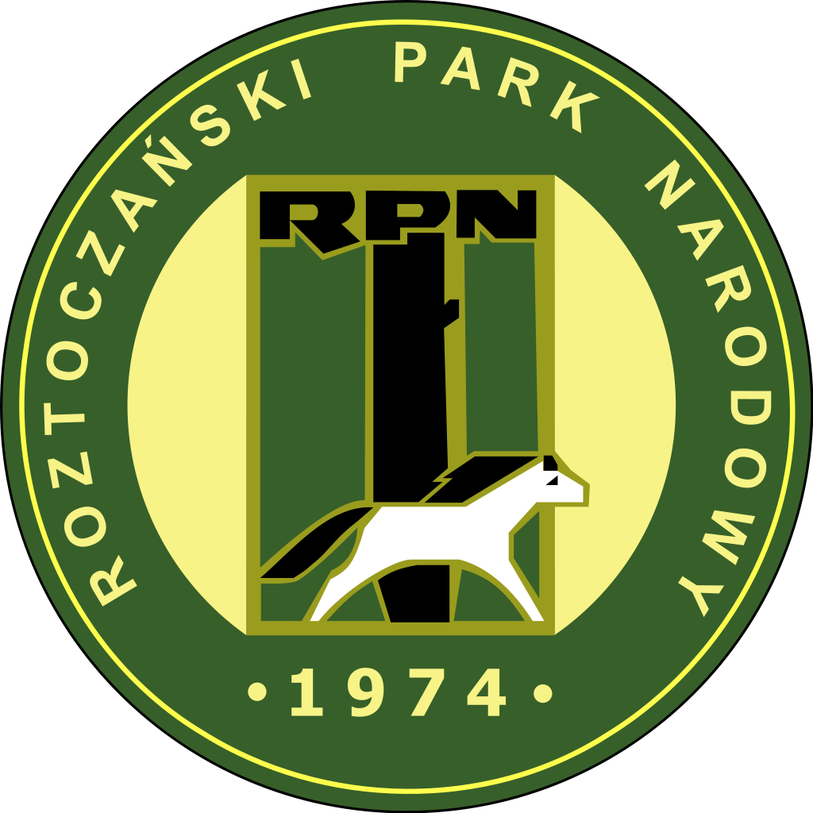

Roztoczański Park Narodowy – park narodowy położony w południowo-wschodniej części Polski, na Roztoczu, w województwie lubelskim. Został utworzony 10 maja 1974. Dyrekcja parku ma swoją siedzibę w Pałacu Plenipotenta w Zwierzyńcu. Symbolem parku jest konik polski.